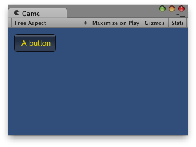

GUI.contentColor
public static Color contentColor;
Description 描述
Tinting color for all text rendered by the GUI.
This gets multiplied by color.
See Also: backgroundColor, color.

Yellow content color (font) in a button.
// Tints with yellow the letters of the button.
using UnityEngine; using System.Collections;
public class ExampleClass : MonoBehaviour { void OnGUI() { GUI.contentColor = Color.yellow; GUI.Button(new Rect(10, 10, 70, 30), "A button"); } }